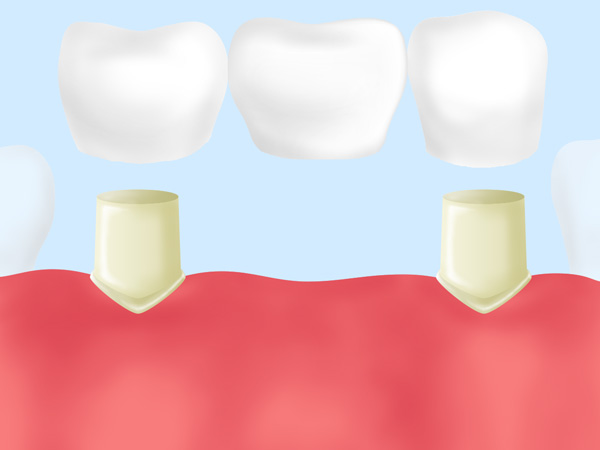
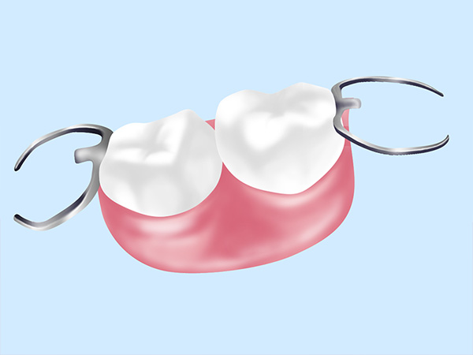
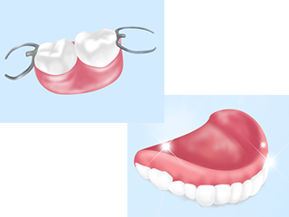
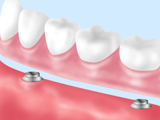
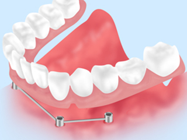

歯を失った場合の健康を維持するために
歯を失ってしまった場合の治療法として一般的な治療法が、義歯・ブリッジ・インプラントの3つです。これらは価格も仕上がりも異なりますが、何を選ぶかが治療後の生活に直結するため、それぞれの治療法について詳しく知っておきましょう。
鹿児島中央駅の歯科医院「ユミデンタルオフィス」では、インプラント治療をはじめブリッジ治療や義歯治療にも対応しています。
歯の機能を回復させる重要性とは
虫歯や歯周病、歯の破折、外傷により、歯を失ってしまうことがあります。「1本くらい歯がなくても……」と放置してしまう方もいるようですが、それは決して賢明な判断ではありません。なぜなら1本でも歯を失うとお口全体のバランスを崩し、さまざまな問題を招くことが考えられるからです。
歯を失ってしまったら、できるだけ早く適切な治療で機能を回復させることが重要となります。当院では、一人ひとりに合った治療法をご提案し、お口の機能回復をサポートします。
歯がないことで起こる身体への影響
歯並びが悪くなる
歯を失うと後方の歯が前に傾斜してきたり、上下に噛み合っていた歯が延びてくる（挺出）こと歯並びに影響を及ぼします。
食べ物が詰まりやすくなり歯周病が進行したり、うまく噛めなくしまうことも。
残存歯に影響を及ぼす
噛み合わせの力が残っている歯に負担をかけ、痛みを生じたり、歯が動揺したりしてしまい、さらに歯を失う負の連鎖を生じることもあります。
メタボリックシンドロームのリスクが高まる
奥歯が無くなると硬いものが食べにくくなり、柔らかいものばかりを食べがちになります。
つまりお肉などのタンパク質よりも麺類やパンといった炭水化物の頻度が増え、肥満傾向になると、メタボリックシンドロームがドミノ倒しのように引き起こされてしまうリスクが高まります。
見た目がコンプレックスになる
歯をなくしたままだと、笑顔になったときや会話をしているときなど、どうしても人目についてしまうため気になるようになり、自分自身の見た目がコンプレックスになってしまうこともあります。
老けた印象になりやすい
歯がなくなったままだと、その近くの皮膚にたるみが出るようになり、唇からもはりがなくなり、口周りの筋肉が緩んでシワなどができやすくなります。
食事が楽しめない
食事をしたときの歯ごたえや歯ざわりなども味を感じるための重要な要素です。歯がなくなるとこうした感覚がわからなくなり、食事の味が楽しめなくなってしまいます。
咬み合わせがずれる
歯はそれぞれが影響し合い、バランスを取り合っています。歯が一本無くなると、その歯の周囲の歯がバランスを取れなくなり、咬む力も偏るようになって咬み合わせがずれてしまいます。
発音がしにくくなる
歯がない部分があると、そこから空気が漏れてしまったり舌の位置が定まらなくなったりして、発音が上手にできなくなることがあります。うまく発音ができないと、会話の楽しみも半減してしまいます。
歯を失った場合の治療法
インプラント
|  | 歯を失ってしまった場所の顎の骨にチタン製の人工歯根を埋め込んで固定し、その上からセラミック製の人工歯を取り付けることで歯の機能を回復させる治療法です。人工歯根は骨と固定されるため、本物の歯に近い咬み心地がよみがえります。 |
|---|
ブリッジ
|  | 失ってしまった歯の両隣の歯を削り、橋をかけるようにして人工の歯を被せて歯の機能を回復させる治療法です。健康な歯を削る必要がありますが、入れ歯と比較してしっかり咬むことができるというメリットもあります。 |
|---|
義歯（部分床義歯、全部床義歯、ノンクラスプデンチャー）
|  |
残っている歯にバネをかけてレジンでつくった人工の歯を装着して咬む機能を回復させる治療法です。保険適用の場合はコストを大幅に抑えられ、手軽に受けられるメリットがありますが、違和感が出やすいというデメリットもあります。
|
|---|
マグネットデンチャー
|  | 歯根にマグネット（磁石）の金属板を埋め込み、その金属と義歯内面にも埋め込んで あるマグネットと磁力でくっつくことで、動きを抑えて安定させる義歯です。（令和3年9月より下顎の一部義歯において保険適応あり） |
|---|
インプラントオーバーデンチャー
|  | インプラントを埋入し、ロケーターと呼ばれるキャップを付けます。義歯の内面に このロケーターがカチっとはまる器具を埋め込み、安定させる義歯です。（保険外治療） |
|---|
それぞれのメリットとデメリット
※表は左右にスクロールして確認することができます。
| インプラント | ブリッジ | 入れ歯 | |
|---|---|---|---|
| メリット |
|
|
|
| デメリット |
|
|
|
PICK UP！ 当院のインプラント治療
歯科医院によっては、残せる歯も抜歯と診断されインプラントを勧める場合 もあります。しかしユミデンタルオフィスでは、安易に抜歯してインプラント治療を行うことはありません。当院は歯周病専門医としての立場から、「どの歯を抜くか」という視点ではなく「どの歯を残せるか」という視点を重視して診療を行っています。
当院では健康な歯を可能な限り残すよう意識して治療を行っています。他院で抜歯が必要と言われた歯でも残せたケースが多数ありますので、インプラント治療をお考えの方はぜひ一度ご相談ください。
インプラント周囲炎について
インプラント自体はむし歯になることはありません。しかし、インプラントの周囲に汚れが付着して細菌感染すると、インプラントの歯周病「インプラント周囲炎」という病気になってしまうことがあるのです。インプラント周囲炎は歯周病と同様の病気で、歯周ポケットが深くなり顎の骨が吸収されてしまいます。
原因となるのは、歯周病と同じく歯垢や歯石の中にいる細菌です。毎日のケア不足や喫煙などの生活習慣によって起こりやすくなり、進行する速度は歯周病よりも早く、最悪の場合インプラントが抜け落ちてしまいます。
インプラント周囲炎の進行段階
| 1段階 インプラント周囲粘膜炎 |
インプラント周囲粘膜炎とは、その名称の通りインプラント周囲の粘膜に炎症が起こった状態を指します。歯垢が溜まることで歯ぐきなどの粘膜に炎症が起こり、歯周病と同じように歯周ポケットからの出血も起こります。 |
|---|---|
| 2段階 インプラント周囲炎 |
インプラント周囲の炎症が顎の骨まで広がってしまった状態を指し、そのまま進行すると顎の骨が溶けてインプラントが抜け落ちてしまいます。歯ぐきには痛みや違和感が出にくいため、歯周病以上に気づきにくい病気です。 |
インプラント周囲炎の治療法
インプラント周囲炎は「インプラントの歯周病」と呼ばれるだけあり、症状などはほとんど歯周病と同じです。しかし、インプラント周囲炎は歯周病と同じ治療法では対処できないことが多いのです。
歯周病は歯周ポケットに入り込んだ汚れや歯垢を除去して治療しますが、インプラントは顎の骨と結合させるために特殊な表面処理がほどこされており、歯垢などを除去するのが難しいのです。最悪の場合は外科手術によってインプラントを除去しなければいけなくなることもあります。
インプラント周囲炎の予防法
| 歯周病は治療する | 歯周病にかかったままの状態でインプラントを入れると、インプラント周囲炎の原因になります。インプラント治療の前には歯周病の治療を終わらせておきましょう。 |
|---|---|
| 自分の歯を残す | インプラントの数が多ければ多いほどインプラント周囲炎のリスクが高いというデータがあります。できるだけインプラントは増やさず、自分の歯を残す治療を行いましょう。 |
| ケアをしっかりする | インプラントを選ぶ際には見た目や費用で選びがちですが、治療後にケアがしやすいものを選ぶことが重要です。 |
| インプラントメーカーの製品をつかう | 現在はインプラントにも格安のものが出回り始めました。しかし、安いインプラントには安い理由があり、ケアのしにくさなどリスクも考えられます。信頼できるメーカーの製品を選びましょう。 |
| 歯科医院に通う | 歯周病の予防と同じで、毎日のケアをしっかりしていればインプラント周囲炎は防ぎやすくなります。定期的な歯科医院でのケアを受ければ、より予防効果は高まります。 |
| 生活習慣を改善する | 喫煙を続けると白血球の機能が低下して、歯周病にかかりやすくなります。インプラント周囲炎を防ぐためには、喫煙者は禁煙が不可欠です。また、ストレスをためすぎないことも大切です。 |
PICK UP！ 歯周病を改善しないうちにインプラント治療を受けないこと！
インプラント周囲炎にかかる方が多い最大の理由は、歯周病を治療せずにインプラントを入れることです。インプラント周囲炎は歯周病以上に感染しやすく、一度感染すると治りにくい病気。歯周病を治さずにインプラントを入れると高確率でインプラント周囲炎を発症してしまいます。
インプラント治療を受ける前には、必ず歯科医院で診査を受けて歯周病にかかっていた場合は治療を済ませてからにしましょう。
症例
01
| 症例タイトル | インプラント |
|---|---|
| 画像 |
|
| 年齢 | 39 |
| 性別 | 女性 |
| 住所 | 鹿児島市 |
| 主訴/ニーズ | 奥歯で噛めない 前歯の変色気になる |
| 治療期間 | インプラント部位:3ヶ月 |
| 治療内容 | 歯周病治療 インプラント治療 歯冠修復治療 |
| 費用 | 下顎インプラント2本 814000円 |
| 院長コメント & 治療のリスク |
患者さんの主訴は奥歯で噛めない、と前歯の変色が気になるとのことでしたが、全顎的に歯肉の炎症が顕著で歯周病が重症化していました。口腔内の炎症のコントロールを行わないままインプラントを埋入してしまうと、インプラント周囲炎を生じてしまいます。また前歯の審美修復においても、長期にわたり安定させるためには健康な歯周組織が欠かせません。まずは歯周病の治療を行なったのちに全顎的に治療を行いました。 |
02
| 症例タイトル | |
|---|---|
| 画像 |
|
| 年齢 | 39歳 |
| 性別 | 女性 |
| 住所 | 鹿児島市 |
| 主訴/ニーズ | 前歯が折れた |
| 治療期間 | 5ヶ月 |
| 治療内容 | 上顎右側中切歯抜歯即時インプラント |
| 費用 | 407000円 |
| 院長コメント & 治療のリスク |
アイスバーをかじって前歯の歯根が折れてしまった患者さん。ブリッジ、義歯、インプラントの治療選択肢の中から、隣の健康な歯を削りたくないとのことで、インプラントを選択されました。術前は仮歯を両サイドの歯に接着させている状態で、抜歯と同時にインプラントを埋入しました。歯科技工士が左の前歯と色や形が合うように、スケッチを行い、セラミックを作製しました。 |
| 症例タイトル | |
|---|---|
| 画像 |
|
| 年齢 | 59歳 |
| 性別 | 女性 |
| 住所 | 鹿児島市 |
| 主訴/ニーズ | 奥歯がなくて以前義歯を作ったが調整しても合わない |
| 治療期間 | 2年（全顎治療） |
| 治療内容 | 歯冠修復、ホワイトニング、下顎ノンクラスプデンチャー |
| 費用 | ノンクラスプデンチャー 176000円（税込） |
| 院長コメント & 治療のリスク |
臼歯の欠損を放置しておくと、残存する前歯に負担がかかり残りの歯の寿命を縮めてしまいます。奥歯のサポートをしっかり作ってあげることで食事もし易くなり、健康な歯を守っていけるようメインテナンスを行なっています。 |
| 症例タイトル | |
|---|---|
| 画像 |
|
| 年齢 | 70歳 |
| 性別 | 女性 |
| 住所 | 鹿児島市 |
| 主訴/ニーズ | 奥歯がぐらつく 金属のバネが気になる |
| 治療期間 | 8ヶ月 |
| 治療内容 | 歯周基本治療 歯冠修復 ノンクラスプデンチャー作成 |
| 費用 | ノンクラスプデンチャー160000円×2（上下） |
| 院長コメント & 治療のリスク |
義歯を新しく作製し、食事もしやすくなっただけでなく金属のバネがなくなり見た目が綺麗になったと喜んでくださいました。 |